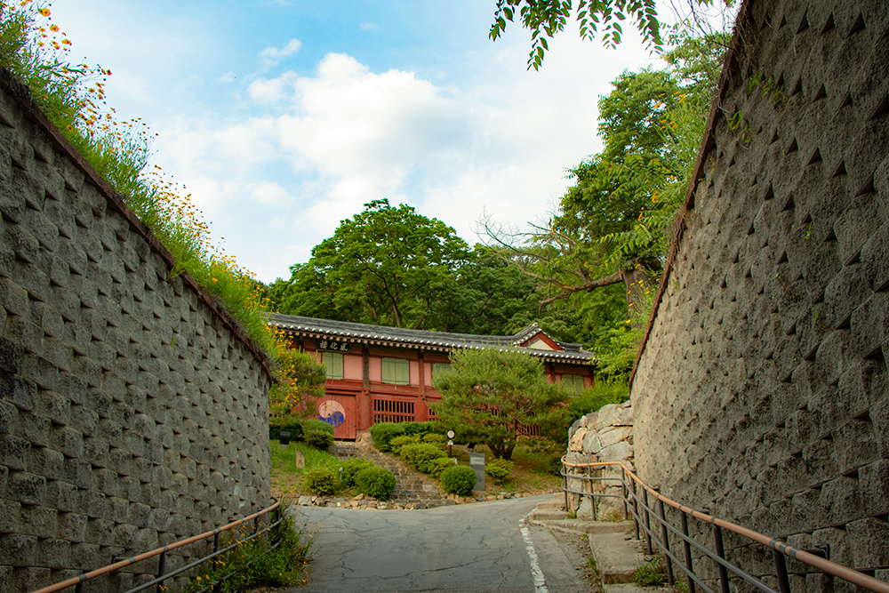

Details
방문장소

영령사
안성 향교길에 있는 조용한 절집이다. 건물은 하나정도 밖에 없는 아주 작은 절이다.

안성향교
1983년 9월 19일 경기도문화재자료 제27호로 지정되었다. 1532년(중종 27)에 창건되었고 최근 몇 차례 중수되어 곳곳에 근대식 보수의 흔적이 남아 있다. 연대가 오래 되지 않았으나, 독특한 건축 형식과 짜임새 있는 공간 구조를 갖추고 있으며, 경기 지역의 대표적 향교이다.